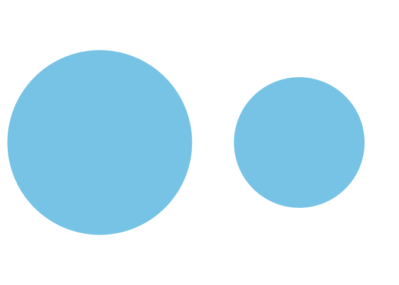
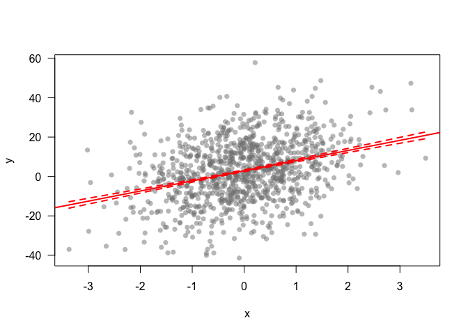
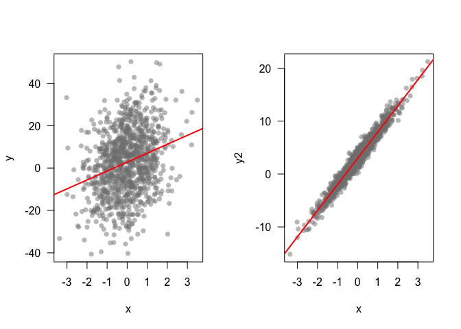
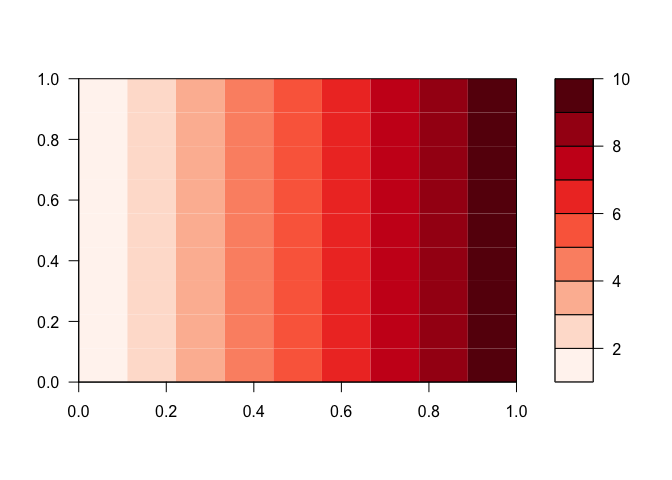
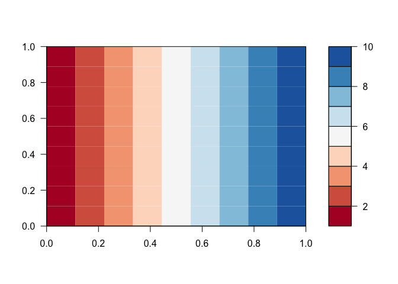
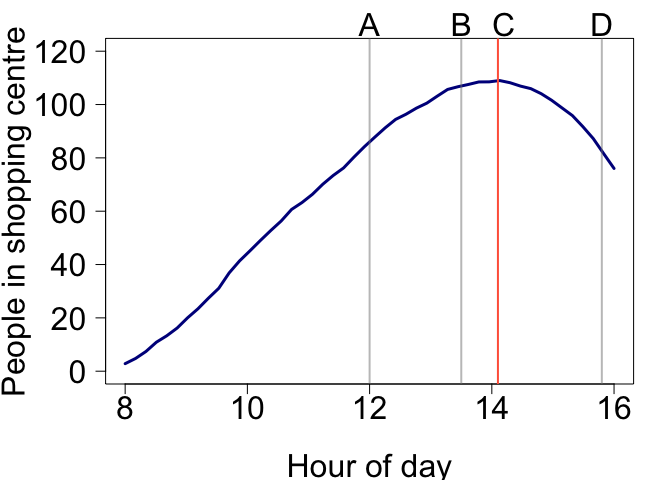

These notes and code are intended to support my presentation for the Bioinformatics Winter School at The University of Queensland, July 2016.
I hope you find them useful, whether you are able to attend or not.
mnsize <- c(2800, 650)
sesize <- c(800, 50)
nams <- c('Male', 'Female')
cols <- c('steelblue', 'sienna3')
par(oma = c(1,2,1,1), mgp = c(6,1,0), mar = c(5,8,4,2))
barplot(mnsize, names.arg = '', las = 1, ylab = 'Weight (kg)', cex.axis = 2, cex.lab =2, col = cols)
legend('topright', legend = nams, pch = 15, col = cols, cex = 2)
Compare these. Note that if we compare circles we should use area, not the radius or diameter to scale their size.
n <- c(10, 5)
barplot(n, col = 'skyblue', xaxt = 'n', yaxt = 'n')
rad1 <- 1
area1 <- pi*(rad1^2)
area2 <- area1/2
rad2 <- sqrt(area2/pi)
par(mfrow = c(1,2), mar = c(0,0,0,0))
pie(1, col = 'skyblue', labels = NA, border = NA, radius = rad1)
pie(1, col = 'skyblue', labels = NA, border = NA, radius = rad2)
Let’s create a point cloud to demonstrate some data exploration techniques
set.seed(42)
x <- rnorm(1000)
y <- 5*x + 3 + rnorm(1000, sd = 15)
plot(x,y, pch = 16, col = grey(0.5,0.5), las = 1)
Can’t see alot here. A linear model might help us explore if there is any trend going on:
mod1 <- lm(y ~ x)
plot(x,y, pch = 16, col = grey(0.5,0.5), las = 1)
abline(mod1, lwd = 2, col = 'red')
xnew <- seq(min(x), max(x), length.out = 100)
pmod <- predict(mod1, newdata =data.frame(x=xnew), se = T)
lines(xnew, pmod$fit + pmod$se.fit, lwd = 2, col = 'red', lty = 2)
lines(xnew, pmod$fit - pmod$se.fit, lwd = 2, col = 'red', lty = 2)
What about identifying extreme points, that may be worth investigating further? We can pick out points that are greater than 2SDs from the trend:
modresid <- resid(mod1)
sd2 <- sd(modresid)*2
ipt <- which(abs(modresid) > sd2)
plot(x,y, pch = 16, col = grey(0.5,0.5), las = 1)
abline(mod1, lwd = 2, col = 'red')
#Add points where residuals > 2SD
points(x[ipt], y[ipt], pch = 16, col = rgb(1,0,0, 0.6))
Lets compare two datasets that have similar p-values, but very different effect sizes
set.seed(42)
x <- rnorm(1000)
set.seed(420)
y <- 5*x + 3 + rnorm(1000, sd = 15)
set.seed(420)
y2 <- 5*x + 3 + rnorm(1000, sd = 1)
mod1 <- lm(y ~ x)
mod2 <- lm(y2 ~ x)
#Compare the pvalues on the slopes
summary(mod1)##
## Call:
## lm(formula = y ~ x)
##
## Residuals:
## Min 1Q Median 3Q Max
## -43.201 -10.330 0.395 9.634 46.694
##
## Coefficients:
## Estimate Std. Error t value Pr(>|t|)
## (Intercept) 2.8054 0.4614 6.080 1.71e-09 ***
## x 4.2096 0.4603 9.145 < 2e-16 ***
## ---
## Signif. codes: 0 '***' 0.001 '**' 0.01 '*' 0.05 '.' 0.1 ' ' 1
##
## Residual standard error: 14.59 on 998 degrees of freedom
## Multiple R-squared: 0.07732, Adjusted R-squared: 0.07639
## F-statistic: 83.63 on 1 and 998 DF, p-value: < 2.2e-16summary(mod2)##
## Call:
## lm(formula = y2 ~ x)
##
## Residuals:
## Min 1Q Median 3Q Max
## -2.88004 -0.68868 0.02634 0.64229 3.11291
##
## Coefficients:
## Estimate Std. Error t value Pr(>|t|)
## (Intercept) 2.98703 0.03076 97.11 <2e-16 ***
## x 4.94731 0.03069 161.21 <2e-16 ***
## ---
## Signif. codes: 0 '***' 0.001 '**' 0.01 '*' 0.05 '.' 0.1 ' ' 1
##
## Residual standard error: 0.9724 on 998 degrees of freedom
## Multiple R-squared: 0.963, Adjusted R-squared: 0.963
## F-statistic: 2.599e+04 on 1 and 998 DF, p-value: < 2.2e-16par(mfrow = c(1,2))
plot(x,y, pch = 16, col = grey(0.5,0.5), las = 1)
abline(mod1, lwd = 2, col = 'red')
plot(x,y2, pch = 16, col = grey(0.5,0.5), las = 1)
abline(mod2, lwd = 2, col = 'red')
In Mariani et al. they plot rates of seafood fraud by several European countries. While its a foundational study that establishes improvement in the accuracy of food labelling, their graphics could be improved in several ways.
First they use perspective pies. This makes it incredibly hard to compare the two groups (fish that are labelled/mislabelled). Humans are very bad at comparing angles and pretty bad at comparing areas. With the perspective you can’t even compare the areas properly. They do provide the raw numbers, but then, why bother with the pies?
Note that the % pies misrepresent the data slightly because the % figures are actually odds ratios (mis-labels / correct labels), rather than percent (mis-labeels / total samples).
Second the pies are coloured red/green, which will be hard for red-green colourblind people to see.
Third, they have coloured land blue on their map, so it appears to be ocean at first look.
Fourth, the map is not really neccessary. There are no spatial patterns going on that the authors want to draw attention to. I guess having a map does emphasize that the study is in Europe. Finally, the size of each pie is scaled to the sample size, but the scale bar for the sample size shows a sample of only 30, whereas most of their data are for much larger samples sizes (>200). Do you get the impression from the pies that the UK has 668 samples, whereas Ireland only has 187? Therefore, from this graphic we have no idea what sample size was used in each country.
In fact, all the numbers that are difficult to interpret in the figure are very nicely presented in Table 1.
Below is a start at improving the presentation. For instance, you could do a simple bar chart, ordering by rate of mislabelling.
cnames <- c('Ireland' ,'UK','Germany','France','Spain','Portugal')
corrlab <- c(180, 647, 145, 146, 267, 178)
mislab <- c(7, 21, 9, 4, 24, 12)
misrate <- 100*signif(mislab / (corrlab + mislab),2)
corrrate <- 100 - misrate
ord <- order(misrate, decreasing = T)
y <- rbind(corrrate, misrate)
par(mar = c(5,4,4,7))
barplot(y[,ord], names.arg = cnames[ord], col = c('skyblue','tomato'), ylab = 'Labelling rate (%)', las = 2)
legend(x=7.5, y = 90, legend = c("Mislabelled", "Correctly labelled"), pch = 16, col = c('tomato','skyblue'), xpd = NA, cex = 0.7)
You could add another subfigure to this, showing the rate by different species too.
The barplot doesn’t communicate the sample size, but then that is probably not the main point. The sample sizes are probably best reported in the table
If we felt the map was essential, then putting barcharts on it would be more informative. It is not that easy to add barcharts ontop of an existing map in R, so I would recommend creating the barcharts seperately, then adding them on in Illustrator or Powerpoint.
We can make a basic map like this:
library(maps)##
## # maps v3.1: updated 'world': all lakes moved to separate new #
## # 'lakes' database. Type '?world' or 'news(package="maps")'. #library(maptools)## Loading required package: sp## Checking rgeos availability: TRUE##
## Attaching package: 'maptools'## The following object is masked from 'package:sp':
##
## nowrapSpatialLinesmap('world', xlim = c(-20, 20), ylim = c(35, 60), col = 'grey', fill = T)
Then create some nice barcharts. We write a loop so we get one barchart for each country.
nc <- length(cnames)
par(mfrow = c(2,3), oma = c(1,1,1,3))
for (i in 1:nc){
y <- c(mislab[i], corrlab[i])
barplot(y, names.arg = '', las = 2, col = c('tomato','skyblue'), ylim = c(0, corrlab[i]), main = cnames[i], cex.main = 2.4, yaxt = 'n')
byy <- signif(max(y),2)/3
yat <- c(0, min(y), max(y))
axis(2, at = yat, las = 2, cex.axis = 2, labels = F)
axis(2, at = yat[2:3], las = 2, cex.axis = 2, labels = T)
}
legend(x = 2.8, y = 500, legend = c('Fraud', 'Correct'), pch = 15, col = c('tomato','skyblue'), xpd = NA, cex = 2, bty = 'n')
It can be misleading to present % and proportion data on axes that are not scaled 0 - 100%. For instance, compare these three graphs:
y <- c(70, 72, 68, 73)
x <- 1:4
xnams <- LETTERS[1:4]
par(mfrow = c(1,3), oma = c(1,1,1,3), mar = c(5,6,2,2))
plot(x,y, pch = 3, cex = 2, las = 1, xaxt = 'n', xlab = '', ylab = 'Percent', cex.axis = 2, cex.lab = 2, tcl = 0.5, xlim = c(0, 5), col = 'red', lwd = 3)
axis(1, at = x, labels = xnams, cex.axis = 2, tcl = 0.5)
barplot(y, names.arg = xnams, las = 1, cex.axis = 2, cex.lab = 2, cex.names = 2, ylab = 'Percent')
barplot(y, names.arg = xnams, las = 1, cex.axis = 2, cex.lab = 2, cex.names = 2, ylab = 'Percent', ylim = c(0, 100))
Alot of thought should go into choosing colour scales for graphs for instance- will it print ok? will colour blind people be able to see this? does the scale create artificial visual breaks in the data? Luckily there is a package to help you make the right decision for a colour scale, it is called RColorBrewer. Check out colorbrewer.org for a helpful interactive web interface for choosing colours.
Here I recreate the map of that in Cinner et al. 2016 Nature for fish biomass (using dummy data, as I don’t have their data).
First let’s specify some dummy data
fishbio <- c(3.2, 3.3, 3.4, 6, 9, 3.7,3.9,7, 8, 5, 6, 4)
longs <- c(95.59062 ,96.50676,121.05892,128.14529,135.00157,166.68020,156.44645,146.75308, 150.8980, 151.1395, 142.9253, 119.0074)
lats <- c(4.3201110,1.9012211, -7.4197367, 0.4173821 , 7.2730141, -19.8772305, -28.3750059, -16.9918706, -21.985131, -9.422199, -2.899138, 1.932759)library(RColorBrewer)
library(maps)
#Create the colours for locations
cols <- brewer.pal(9, 'RdYlGn')
colsf <- colorRampPalette(cols)
cols100 <- colsf(100)
breaks <- seq(min(fishbio)-0.01, max(fishbio)+0.01, length.out = 100)
icol <- cut(fishbio, breaks = breaks, labels = F)
fishcols <- cols100[icol]
#Plot locations
map('world', xlim = c(80, 180), ylim = c(-35, 35),interior = F, fill = T, col = 'grey')
points(longs, lats, pch = 16, col = fishcols, cex = 2)
points(longs, lats, pch = 1, cex = 2)
Using red-green palettes makes it hard for colour blind people. Also, using a diverging palette makes it look like there is something important about the middle point (yellow). A better palette to use would be one of the sequential ones. Using reds (and reversing it using rev()) emphasises the worst places. We could use greens and emphasise the best places too. I am using a light grey for the fill so that the points stand out more.
#Create sequential colours for locations
cols <- rev(brewer.pal(9, 'Reds'))
colsf <- colorRampPalette(cols)
cols100 <- colsf(100)
breaks <- seq(min(fishbio)-0.01, max(fishbio)+0.01, length.out = 100)
icol <- cut(fishbio, breaks = breaks, labels = F)
fishcols <- cols100[icol]
#Plot locations
map('world', xlim = c(80, 180), ylim = c(-35, 35),interior = F, fill = T, col = 'grey90')
points(longs, lats, pch = 16, col = fishcols, cex = 2)
points(longs, lats, pch = 1, cex = 2)
To make it easier to understand, let’s look at these again as contour plots. I will use a more appropriate diverging palette to the red-green one though.
z <- matrix(rep(1:10, 10), nrow = 10)
filled.contour(z, col = brewer.pal(9, 'Reds'), nlevels = 10)
filled.contour(z, col = brewer.pal(9, 'RdBu'), nlevels = 10)
Notice the diverging pallette creates an artificial split at yellow
One of the only legitimate uses for pie graphs (I think) is visualising the colour scales. Here is how:
reds <- brewer.pal(9, 'Reds')
greens <- brewer.pal(9, 'Greens')
blues <- brewer.pal(9, 'Blues')
rdylgn <- brewer.pal(9, 'RdYlGn')
rdbu <- brewer.pal(9, 'RdBu')
dark2 <- brewer.pal(8, 'Dark2')
par(mfrow = c(2,3), mar = c(0,0,0,0), oma = c(0,0,0,0))
pie(rep(1, 9), col = reds)
pie(rep(1, 9), col = greens)
pie(rep(1, 9), col = blues)
pie(rep(1, 9), col = rdylgn)
pie(rep(1, 9), col = rdbu)
pie(rep(1, 9), col = dark2)
People are bad at interpreting rates, we just can’t get our heads around accumulation very well. Here is a numerical example. Check out the below figure and ask yourself:
At what time is the number of people in the shopping centre declining?

Before you proceed with code below, take the poll:
Here is how we made the figure and generated the data:
Would you say it is at point A, B, C or D?
par(mar = c(4,4.5,2,2), mgp = c(3,1,0))
plot(times, inrate_err, type = 'l', xlab = 'Hour of day', ylab = 'People per 10 minutes', las = 1, cex.axis = 2, lwd = 3, col = 'darkblue', cex.lab = 2, ylim = c(0, 12))
lines(times, outrate_err, lwd = 3, col = 'tomato')
abline(v = 12, lwd = 2, col = grey(0.5,0.5))
text(12, 13, 'A', xpd = NA, cex = 2)
abline(v = 13.5, lwd = 2, col = grey(0.5,0.5))
text(13.5, 13, 'B', xpd = NA, cex = 2)
abline(v = 14.2, lwd = 2, col = grey(0.5,0.5))
text(14.2, 13, 'C', xpd = NA, cex = 2)
abline(v = 15.8, lwd = 2, col = grey(0.5,0.5))
text(15.8, 13, 'D', xpd = NA, cex = 2)
legend('bottomleft', legend = c('Entering', 'Leaving'), lwd = 2, col = c('darkblue','tomato'), cex = 1.5, xpd = NA)
Let’s plot the total number of people:
par(mar = c(5,5.5,2,2), mgp = c(4,1,0))
plot(times, cumsum(inrate_err) - cumsum(outrate_err), type = 'l', xlab = 'Hour of day', ylab = 'People in shopping centre', las = 1, cex.axis = 2, lwd = 3, col = 'darkblue', cex.lab = 2, ylim = c(0, 120))
abline(v = 12, lwd = 2, col = grey(0.5,0.5))
text(12, 130, 'A', xpd = NA, cex = 2)
abline(v = 13.5, lwd = 2, col = grey(0.5,0.5))
text(13.5, 130, 'B', xpd = NA, cex = 2)
abline(v = 14.1, lwd = 2, col = 'tomato')
text(14.2, 130, 'C', xpd = NA, cex = 2)
abline(v = 15.8, lwd = 2, col = grey(0.5,0.5))
text(15.8, 130, 'D', xpd = NA, cex = 2)
The construction of a simple chart in R can be a surprisingly long piece of code. Here is an example to get you started. Don’t be afraid to experiment!
# --------------- #
# Make some data
# --------------- #
set.seed(42)
n <- 11
x <- rnorm(n, mean = seq(18, 25, length.out = n))
y <- rnorm(n, mean =seq(26, 18, length.out = n))
z <- rnorm(n, mean = 22)
t <- 2005:(2005+n-1)
datnames <- c('Almonds', 'Peanuts', 'Hazelnuts')
plot(t, x)
lines(t, y)
lines(t, z)
Which look terrible. Let’s build a better chart.
# Package for colours
library(RColorBrewer)
#Set axis limits
ymax <- 30
ylim <- c(15, ymax)
xlim <- c(min(t), max(t))
#Define colours
cols <- brewer.pal(3, 'Dark2')
#Parameters for plotting
lwd <- 2
xlabels <- seq(min(t), max(t), by = 5)
ylabels <- seq(0, ymax, by = 5)
#Set the window params
par(mar = c(5,5,4,4))
#Build the plot
plot(t, x, type = 'l', bty = 'n', xaxt = 'n', yaxt = 'n',
ylim = ylim, xlim = xlim, lwd = lwd, col = cols[1],
xaxs = 'i', yaxs = 'i',
xlab = 'Time (yrs)',
ylab = '',
main = 'Changing price of nuts ($/kg)')
#Add more lines
lines(t, y, lwd = lwd, col = cols[2])
lines(t, z, lwd = lwd, col = cols[3])
#Add labels to lines
text(t[n], x[n], datnames[1], adj = c(0, 0), xpd = NA, col = cols[1])
text(t[n], y[n], datnames[2], xpd = NA, adj = c(0, 0), col = cols[2])
text(t[n], z[n], datnames[3], xpd = NA, adj = c(0, 0), col = cols[3])
# Add custom axes
axis(1, col = 'white', col.ticks = 'black', labels = xlabels, at = xlabels)
axis(1, col = 'white', col.ticks = 'black', labels = NA, at = t)
axis(2, col = 'white', col.ticks = 'black', las =1, labels = ylabels, at = ylabels)